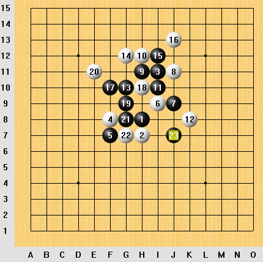

［原创］前几天刚下的一局棋，不是很难，黑先胜
首页
五子棋交流
#1 ［原创］前几天刚下的一局棋，不是很难，黑先胜 作者：news 发表时间：2006-8-25 18:03:52

前几天在联众执黑下的一局,
以下黑的连接较多，白棋的形状很散，黑注意一下进攻次序就好：）最后应该可以一子双杀！
期待和大家交流！
［ 有志青年 于 2006-8-25 20:03:37 时奖励此帖[金币加 20 ］
#2 Re:［原创］前几天刚下的一局棋，不是很难，黑先胜 作者：news 发表时间：2006-8-26 14:00:00
答案一：赢的方法应该不只一种.
[hf] [/hf]
#3 Re:Re:［原创］前几天刚下的一局棋，不是很难，黑先胜 作者：江南新绿 发表时间：2006-8-26 15:09:54
#4 Re:［原创］前几天刚下的一局棋，不是很难，黑先胜 作者：gzy75 发表时间：2006-8-31 20:42:01
d
#5 Re:［原创］前几天刚下的一局棋，不是很难，黑先胜 作者：yzls 发表时间：2006-9-23 10:20:09
看看
#6 Re:［原创］前几天刚下的一局棋，不是很难，黑先胜 作者：浩楠 发表时间：2006-9-24 17:27:45
看看
#7 Re:［原创］前几天刚下的一局棋，不是很难，黑先胜 作者：破网的蜘蛛 发表时间：2006-10-12 15:48:44
顶一下
#8 Re:［原创］前几天刚下的一局棋，不是很难，黑先胜 作者：天上掉个馅饼 发表时间：2006-10-27 19:58:06
顶~~
#9 Re:［原创］前几天刚下的一局棋，不是很难，黑先胜 作者：棋坛菜鸟 发表时间：2006-10-27 20:13:58
看看。
#10 Re:［原创］前几天刚下的一局棋，不是很难，黑先胜 作者：zhc120 发表时间：2006-10-27 23:59:22
看看到底什么结果！！